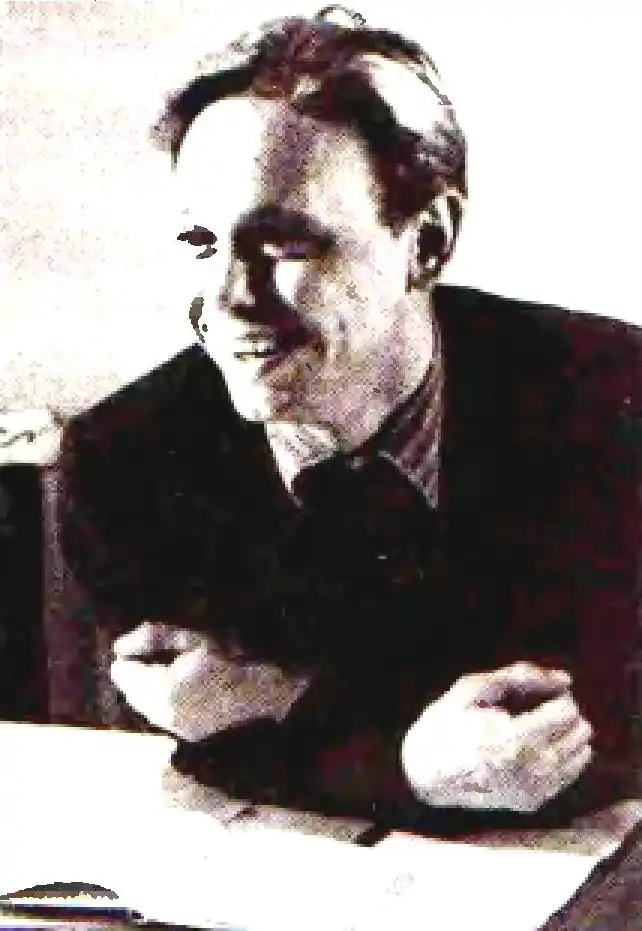

9.05.1936 — 24.11.1973
Передчасно обірвана пісня
Цей щирий, ніжний, вдумливий і прекрасний поет, син Полтавщини, яку любив соромливо й віддано, якій на славу сплів і свій поетичний вінок, прожив до болю мало — лише 37 років. Невиліковна хвороба передчасно обірвала його пісню про рідну землю, про Григорія Сковороду, що мандрував нею, гартуючи дух людський, про Шевченка... Полетіла і його душа "в дорогу за ластівками" (так називається одна з його поетичних збірок). Та ластівки повертаються з вирію в рідну сторону — повертається й поет своїми віршами. Остання збірка В. Підпалого "Поезії" вийшла 1986 року. Життя письменника — в його творах. Душа поета — у його віршах. А ось життєпис Володимира, викладений ним власноручно. Ця сповідь подається тут уперше. "Народився я в селі Лазірках 9 травня 1936 року, за 25 км від Лубен. Мати Ольга Степанівна — козачка з хутора Макарівщини, а батько Олексій Лукович — виходець з-під Великої Багачки. На дев’ятому році мати була вже круглою сиротою і шукала щастя наймитуванням у Лубнах. Може тому, коли я підріс і міг вечорами читати їй "Кобзаря", плакала гірко й невтішно, повторюючи завжди одне: "Всі наймити, синочку..." Вона знала тьму казок та приповісток, шанувала загадки і вміла знаходити до них ключ. Але ніколи я не чув, щоб вона співала. Певно, гірке дитинство, як і подальше життя (1943 року вона стала вдовою), наклало свою печатку на її характер. Мати вміла і любила працювати, кохалася у квітах (вся хата була великим квітником...) і чистоті. Померла вона самітньою 21 січня 1957 року, на 53 році свого життя. Я тоді був у армії, а дві доньки повиходили заміж і жили не з нею... Батько працював на залізниці, любив сади і бджільництво, ненавидів тютюн (син палить за нього і за себе) і горілку. Загинув під Києвом 1943 року. Пам’ятаю його добре. Якби володів пензлем, можна було б відтворити його образ у величезному циклі: батько качає мед; батько садить дерева; батько іде до армії, і т. д. В селі й до сьогодні розповідають про те, як він співав. А я пам’ятаю дві його пісні — про Байду та "Ой забіліли сніги". Мабуть тому, що гарне враження про ці пісні залишив мані батько, навіть у виконанні артистів я відчуваю і нині фальш та штучність, які так згубно діють на все сценічне та вокальне мистецтво України. Учився я у Величанській семирічній та Лазірківській середній школах. Любив (і люблю) історію, літературу; донині не знаю і не розумію точних наук. В школі читав дуже багато, але без ніякісінької системи. 1953 року закінчив 10 класів; працював у МТС, колгоспі. 1955 року був мобілізований на флот. Службу служив, але не любив: нудьгував за степом, садами. 1957 року демобілізувався (через хворобу ніг) і поступив до Київського університету на філологічний факультет (український відділ), який і закінчив 1962 року. Перші вірші видрукував на шпальтах комсомольських "Молоді України" та "Зміни" (1958 р.). У Державному видавництві художньої літератури 1963 року вийшла перша збірочка "Зелена гілка", а роком пізніше — "Повесіння" у "Радянському письменникові". Нині підготував дві книги: "Тридцяте літо" для видавництва "Молодь" та "Книгу лірики". Мрію написати пісню... Працюю старшим редактором поезії у "Радянському письменникові". Одружений, маю доньку. Позапартійний. Позаспілковий. Київ, 26 вересня 1966 р.". До Спілки письменників його прийняли 1967 року. Того ж року вийшла в світ і згадувана збірка "Тридцяте літо". Після того були книжки "В дорогу — за ластівками" (1968) та "Вишневий світ" (1970), а посмертно — "Сині троянди" (1979), "Поезії" (1986), "Пішов в дорогу за ластівками" (1992). До останньої книги входять неопубліковані за життя твори В. Підпалого та спогади про нього як поета, редактора, громадянина, людину. З них він постає борцем за відродження української культури, людиною-подвижником, що в нелегкі 60 — 70-і роки підтримував справжню літературу, писав і редагував справжні твори. У багатьох віршах Володимира Підпалого живе дух його рідного краю, почуття любові до Полтавщини. Серед них вірші "Зірка", ("Пам’ятаю: над шляхом Лубенським:.."), "Осінній сон", "Пам’яті матері", "Вечірнє", цикл "Григорій Сковорода" та ін. Володимир Підпалий помер 24 листопада 1973 року.